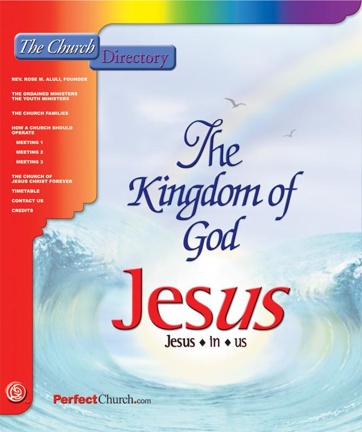

Rev. Rose M. Aluli
"I praise God for the revelation that we do not have to die, Amen." Rose M. Aluli
This message was given to the Church on February 17, 1980.
Through the power of the Holy Ghost we can overcome everything, including the last enemy, which is death, and live and rule and reign on this earth for our Father and our Lord Jesus Christ.
Does everybody know what has to be taken out of us, that there is a root that we are born with: the Adam nature that we are born with? We had nothing to do with it. We cannot enter the kingdom with any of that root left in us. The scriptures are very plain on it. We cannot come in to the kingdom. Flesh and Blood cannot inherit the kingdom.
Everything has to be consumed by the Spirit of God to where there is no flesh will that could oppose the will of the Spirit or the will of God, because we would make shipwreck – just the same as Adam did – of the kingdom. And this time God is going to have a kingdom where we will rule and reign in righteousness, and it will be exactly that. So, all of this Adam nature must be burned out of us as we yield to the Spirit. It must be. We cannot come in. We cannot. And we can only do it as God deals with us, and be willing to put everything out of our lives.
Now it is just plain – that we cannot come into the kingdom with this. Every one of us is born with it; every one of us has it. And God has dealt with all of us in different ways, and we keep playing around, but the time is ticking away, and getting shorter and shorter and shorter, and one of these days when that door is shut, it is shut! And the end of grace period will be gone, and you cannot do anything about it. You just go the way of flesh. We cannot come into the kingdom except we become righteous even as he is righteous, Amen. And it has to be done by the Spirit, Amen.
pp. 1
I do not feel that we can leave this thing hanging out here. We need some real scriptures, some real truth, to prove what we are saying here. I want to just do enough so people will have an understanding. Now first, the scripture says Adam was created in the image and likeness of God. He was pure, holy, and set over the works of God’s hands. Adam was limited.
Genesis 1:26-30 And God said, Let us make man in our image, after our likeness: and let them have dominion over the fish of the sea, and over the fowl of the air, and over the cattle, and over all the earth, and over every creeping thing that creepeth upon the earth. So God created man in his own image, in the image of God created he him; male and female created he them. And God blessed them, and God said unto them, Be fruitful, and multiply, and replenish the earth, and subdue it: and have dominion over the fish of the sea, and over the fowl of the air, and over every living thing that moveth upon the earth. And God said, Behold, I have given you every herb bearing seed, which is upon the face of all the earth, and every tree, in the which is the fruit of a tree yielding seed; to you it shall be for meat. And to every beast of the earth, and to every fowl of the air, and to every thing that creepeth upon the earth, wherein there is life, I have given every green herb for meat: and it was so.
Now Adam was limited to the things, to the works of his hands here on the earth. He had dominion over those things, but in Christ, we will have dominion over all things – all things. I’m going to read this first part again. Adam was created in the image and likeness of God. Well then, he could not die, could he? Because you cannot kill God or you cannot kill Christ in his resurrected body, can you, because he is flesh and bone (but we will get into that later). He was pure and holy and set over the works of God’s hands until disobedience came. Then death and decay set in. Instead of pure water, or spirit, bitter and sweet started flowing from him, and thorns and briars started to grow and finally choked out all the good, or spirit, and death came to mankind. (We’ll get into scriptures so I will prove all of this.) This man is again being restored into the likeness of the Father and Son, this new man in Christ. Through Christ’s death and resurrection, the process of Adam is being reversed. Now this is the day and this is the age, this is the end of time when everything is lining up exactly according to the scriptures, when this process, God has promised, will be reversed.
We are born in sin, something we had no choice in, being born in the Adamic nature. And as we accept Christ, or this life giving Spirit, Christ starts the reverse action. Well, we know that sin, the curse of the Father on Adam, was death. He said, "If you do this you will die." So there had to be a change in his body that he became flesh and blood. He was not made that way. He says, “You are bone of my bone and flesh of my flesh” in the first chapter of Genesis (I do not want to get too far into that yet). Through disobedience, Adam started death working in him. He was made in the exact image of God and of Jesus Christ, and he could not die. Jesus had to come to earth and become a man with flesh and blood. This is why Jesus said, "Flesh and blood cannot inherit the kingdom," but flesh and bone can.
pp. 2
Through Christ, we receive life and the process starts to change us back to that immortal being Adam started with, when we get saved. If we just stopped, that is as far as we would go, but we found out that there are some new things in here – the mysteries of God, that have been revealed by the Spirit – that go far beyond just being a Son of God. Amen. Through Christ, we receive life and the process starts to change us back to that immortal being Adam started with. Through obedience to the Word of God left for us, or pattern of examples from past history of men’s lives; if we obey the truth in the Word – Christ – we will find our way back into that perfect relationship Adam had in the beginning, where sin and death are destroyed. Doesn’t the Bible say, “Be ye perfect, even as your Father in heaven is perfect”? All right. That’s just a little opener here.
When Adam and Eve sinned, they became flesh and blood bodies. Before that, they were made exactly in the image of the Father and Christ. They could not die. And you remember how he set a sword out there, a flaming sword, so that they could not, in their sinful state from disobedience, take of the tree of life and live forever. Now we know that. So there had to be a change. Death started working in Adam the minute he sinned, and in Eve. Then the curse came, which was death, so that they could die. They could not die if they did not have blood, because the Bible plainly states the life is in the blood. So when they were first formed, they had bodies like Jesus’ resurrected body. Jesus said, “I am flesh and bone.”
The Spirit was their source of life, not blood, in their original creation. If you don’t believe it, you have to go back and read what the Word says. Adam in the very beginning, he said to Eve, “You are bone of my bone and flesh of my flesh,” and then Jesus says, “A spirit hath not flesh and bone.” And he said, “Handle me and see,” and he showed them his hands and his side. So you see, he cannot die. There is a change that we do not exactly understand. But we know that when this root of sin is completely destroyed, then the curse of death is gone and the transformation will take place. Otherwise, then the Scripture is a lie if it says that we are going to be changed without death. We have to believe what we hear, what we read, what the Word of God says. They immediately knew that they had sinned and covered themselves with leaves. Our vile bodies must also be changed like unto his glorious body, after his resurrection, and in the twinkling of an eye.
Genesis 1:26-28 And God said, Let us make man in our image, after our likeness: and let them First, he said ‘let us make man’ and then he said ‘let us make them’. and let them have dominion over the fish of the sea, and over the fowl of the air, and over the cattle, and over all the earth, and over every creeping thing that creepeth upon the earth. So God created man in his own image, in the image of God created he him; male and female created he them. And God blessed them, and God said unto them, Be fruitful, and multiply, and replenish the earth, and subdue it: and have dominion over the fish of the sea, and over the fowl of the air, and over every living thing that moveth upon the earth.
pp. 3
No Blood. God breathed life in Adam. He just breathed life into him, by the Spirit. But the blood is the beast nature in man. That uncontrollable beast nature is in the blood. I have such a study on this, but I am just going to touch on it a little bit; what the blood of Jesus Christ really – why it was necessary for him to become a flesh and blood man. Through the shedding of his blood, that was death. Actually, the death is in the blood that Adam and Eve inherited after sin. God said to Cain, "The voice of thy brother’s blood crieth out from the ground," when he was killed. Adam was formed after the pattern and likeness of Jesus and God, a body that could not die, flesh and bone. After sin entered in, death came upon him. A change.
Genesis 2:23-24 And Adam said, To Eve This is now bone of my bones, and flesh of my flesh: she shall be called Woman, because she was taken out of Man. Now we are taken – a church was born out of the side of Christ as that blood was spilled. Amen.Therefore shall a man leave his father and his mother, and shall cleave unto his wife: and they shall be one flesh. Adam was first formed and kept by a body like Jesus after his resurrection: flesh and bone. This is our change. After sin came, his life was in his blood, subject to death.
Ephesians 1:7 In whom we have redemption through his blood, the forgiveness of sins, according to the riches of his grace; His blood was given for the forgiveness of sin. Sin caused the curse and caused the blood to be in Adam and death, so that he could die. He could not die before, until he became blood. So that had to happen. It took the blood of Jesus to redeem us; to redeem us, not just cover our sins; but it took the blood of Jesus and the spilling of his blood to redeem us from that curse, that flesh and blood man; and bring us back into that flesh and bone man.
Luke 24:39 Behold my hands and my feet, that it is I myself: handle me, and see; for a spirit hath not flesh and bones, as ye see me have. The reason I am reading it is because this is God’s Word, this is not my word, Amen. And we have to believe every word, and every little dot, and every tittle. That is what it says. We have to believe what this Word says, that he was flesh and bone, the same as Adam was. And Adam was first created in that image with no death. So we know that sin, this Adamic nature is the only thing that hinders, that causes us to die. And Jesus made the way, so that when all sin is gone and the root of sin is completely removed out of us, then the action is reversed and we live forever without death. It is very plain.
pp. 4
Ephesians 5:30 For we are members of his body, of his flesh, and of his bones. It did not say a thing (about Blood).
Ephesians 5:30 For we are members of his body, of his flesh, and of his bones. Now this is this new church he is talking about in Ephesians.
Ephesians 3:16 That he would grant you, according to the riches of his glory, to be strengthened with might by his Spirit in the inner man; So his Spirit strengthens our spirit in the inner man that we are able to overcome this sin nature or this curse of death. I want to show you that baptism does not cleanse the flesh.
1 Peter 3:21 The like figure whereunto even baptism doth also now save us (not the putting away of the filth of the flesh, but the answer of a good conscience toward God,) by the resurrection of Jesus Christ: It does not put away sin, this sin nature. Baptism can only wash us as a testimony and so on and so forth. But it cannot destroy this thing in us. The baptism, it cannot. I mean the water baptism, it cannot destroy this. It helps.
1 Peter 3:20-21 Which sometime were disobedient, when once the longsuffering of God waited in the days of Noah, while the ark was a preparing, wherein few, that is, eight souls were saved by water. The like figure whereunto even baptism doth also now save us (not the putting away of the filth of the flesh, but the answer of a good conscience toward God,) by the resurrection of Jesus Christ: This cannot put away the filth of the flesh because we are born with an Adamic nature that will not quit sinning. Now that is all. (A question is asked: So, did water baptism, prefigured in Noah, show that it did not completely cleanse the flesh? Is that it, Rose?) Right, because that Adam nature was still in him, and we know what the life of Noah was. And that same race has come right on up, because he left Noah in that same Adamic nature that man started out with at the beginning.
These scriptures that he is giving us now are showing that this end time people, this kingdom people, will be in the likeness, in the image, of God himself again. Well, as long as we have this in here, we cannot come into that. And we cannot take it out. You cannot reach in and pull it out. But you can keep walking before God in the Spirit until we are free from that root of sin, a thing at a time. We could not stand it if he pulled it all out at once. Amen.
pp. 5
Luke 12:47 And that servant, which knew his lord's will, and prepared not himself, neither did according to his will, shall be beaten with many stripes. Now it is a very serious thing to hear this message and not try to do something about our lives. that servant which knew his lord’s will and prepared not himself, There is something WE have to do. WE have to do this. When once we have a knowledge of the root of sin in us, and we keep feeding on that thing and living on that thing and doing the will of the flesh, and we do not seek God and resist evil and resist sin, then we ‘shall be beaten with many stripes,’ Amen.
2 Corinthians 5:1-4 For we know that if our earthly house of this tabernacle were dissolved, we have a building of God, an house not made with hands, eternal in the heavens. For in this we groan, earnestly desiring to be clothed upon with our house which is from heaven: If so be that being clothed we shall not be found naked. And we cannot take on this new house as long as there is sin in there, Amen. He said, "We do groan, earnestly desiring to be clothed upon," with this house from heaven. For we that are in this tabernacle do groan, being burdened: not for that we would be unclothed, but clothed upon, that mortality might be swallowed up of life. All right now, to ‘be unclothed’; what that means is that the spirit would leave this body. That is what it is saying, not that we would be unclothed. Not that we would die, in other words, but that we would be clothed upon by that Spirit of life, that everlasting life, that we do not have to taste death. Now who cares about death? I could care less one way or another. But the thing is, that I want to help fulfill the Word of God in the age that I am living in. And this Word is true; this is God’s Word. And so the flesh groans constantly, hating death, being afraid of death. If you have not overcome that, then that is a terrible thing. I do not have that any more, praise God. I died too many times, or come right up to the gate, and the Lord has let me live. But there is an overcoming there. So he says ‘this flesh continually groans’ to overcome this, this death, that this life will come to us.
Philippians 3:21 Who shall change our vile body, that it may be fashioned like unto his glorious body, according to the working whereby he is able even to subdue all things unto himself. This vile body, this sinful body must be changed and fashioned like unto his glorious body after he was resurrected, a flesh and bone body, without sin, and not subject to any of the elements of the earth; nothing, no walls, no nothing. (That’s just a terrible illustration, compared to the power of Jesus and the inheritance that we will inherit in him.) He said that this body must be changed. This vile body, this sinful body, this body of death, this corrupted sinful body must change and take on the glorious body of Jesus Christ, Amen.
pp. 6
Hebrews 2:13-14 And again, I will put my trust in him. And again, Behold I and the children which God hath given me. Forasmuch then as the children are partakers of flesh and blood, And blood, see here is that word: flesh and blood, not flesh and bone as Adam was and as Christ was, Amen. he also himself likewise took part of the same; that through death he might destroy him that had the power of death, that is, the devil; All right, what did he do? He went down into hell, after he became a flesh and bone man, he went down into hell and he took the keys of death, hell and the grave. Of death, you hear me, and of hell, you hear me, and the grave. Now that was the work that Jesus died for, that he might deliver us from death, hell and the grave. How much plainer do you want it? Amen. He came and had to take part of the same, as we are, flesh and blood; that he might die and receive that body, that we would not have to.
1 Corinthians 15:44-52 It is sown a natural body; it is raised a spiritual body. There is a natural body, and there is a spiritual body. And so it is written, The first man Adam was made a living soul; the last Adam was made a quickening spirit. Howbeit that was not first which is spiritual, but that which is natural; and afterward that which is spiritual. The first man is of the earth, earthy: the second man is the Lord from heaven. As is the earthy, such are they also that are earthy: and as is the heavenly, such are they also that are heavenly. And as we have borne the image of the earthy, we shall also bear the image of the heavenly. Now this I say, brethren, that flesh and blood cannot inherit the kingdom of God; neither doth corruption inherit incorruption. This body has to be changed. Behold, I shew you a mystery; We shall not all sleep, but we shall all be changed, In a moment, in the twinkling of an eye, at the last trump: for the trumpet shall sound, and the dead shall be raised incorruptible, and we shall be changed. Christ after the resurrection became as Adam was before sin.
1 Thessalonians 5:9-10 For God hath not appointed us to wrath, but to obtain salvation by our Lord Jesus Christ, Now, I want to say something. We have not obtained salvation. If you know what salvation means, it is complete redemption. People call being saved, salvation. That is not complete. You are forgiven when you are saved. If you study the scriptures, you will find out that you are forgiven, you are forgiven; the blood has covered your sins. But salvation means a complete work. We are being saved, we are obtaining complete salvation, Amen.Who died for us, that, whether we wake or sleep, we should live together with him. Whether we die or whether we live, we will be with him, Amen.
pp. 7
2 Thessalonians 1:10 When he shall come to be glorified in his saints, and to be admired in all them that believe (because our testimony among you was believed) in that day.
2 Thessalonians 1:12 That the name of our Lord Jesus Christ may be glorified in you, and ye in him, according to the grace of our God and the Lord Jesus Christ. That pretty well speaks for itself, but we can comment a little on it. There is a believing here isn't there? ‘When he shall come to be glorified in his saints.’ Now we know that Christ lives in us, the hope of glory, Amen. He lives in us. When Jesus said, "When they say lo here and lo there, don’t hear them; don’t follow after them", because Christ is here, in us. So where are you going to go looking for him? That is false. They are false teachers. Christ is in here and this is the place where the kingdom of God is without observation. The kingdom of God is without observation; you cannot see it in other words, because it is here in us. This is where his kingdom is.
1 Thessalonians 4:14-17 For if we believe that Jesus died and rose again, even so them also which sleep in Jesus will God bring with him. For this we say unto you by the word of the Lord, that we which are alive and remain unto the coming of the Lord shall not prevent them which are asleep. Amen, that explains itself.For the Lord himself shall descend from heaven with a shout, with the voice of the archangel, and with the trump of God: and the dead in Christ shall rise first: Then we which are alive and remain shall be caught up together with them in the clouds, to meet the Lord in the air: and so shall we ever be with the Lord. So, as a witness and as a testimony, we know what he is speaking here. You are not caught up anywhere, you are caught up in the Spirit, Amen. (We completely proved that yesterday, by scriptures.) It is an awakening of the dead. And like you say, how high is air? Nine miles, Amen. There have been so many airplanes crisscrossing across this air place here, I am sure there is no kingdom up there, Amen, in that air, Amen. And he said you are caught up in the air, Amen. And when he put man on the earth and there are so many scriptures for this that it is ridiculous that anybody could ever believe that we are going to be carried off somewhere. It is just absolutely ridiculous.
Jesus had to die and shed his blood to kill that first man, Adam. I always wondered what the blood of Jesus really did. It destroyed the curse, or the man of sin Adam took on when he sinned, when he became a flesh and blood man. We must understand this or we will miss the whole thing.
pp. 8
